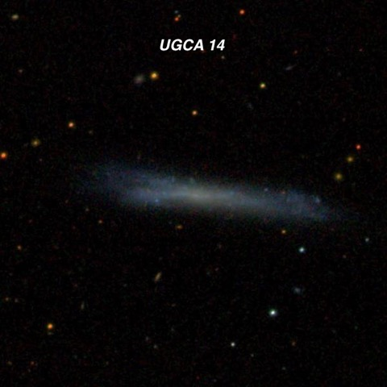
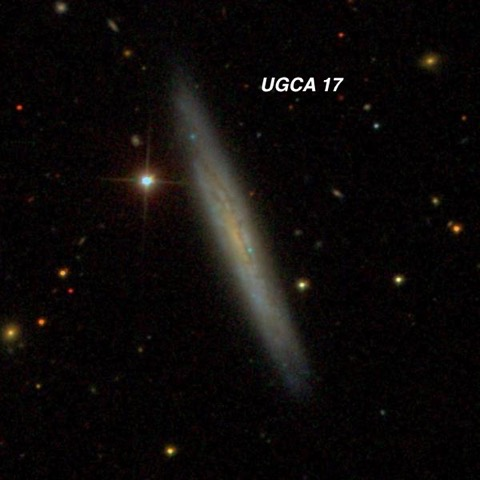
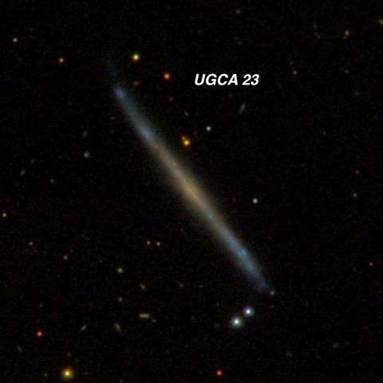
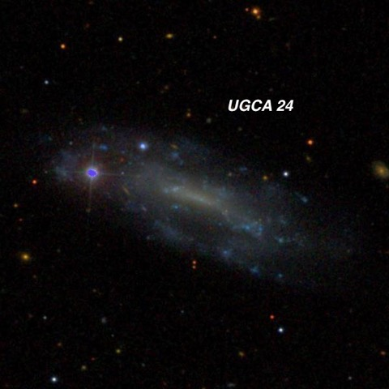
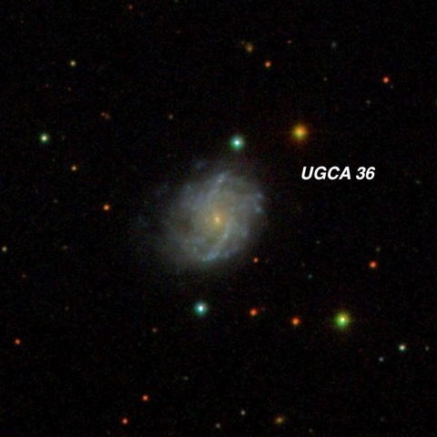
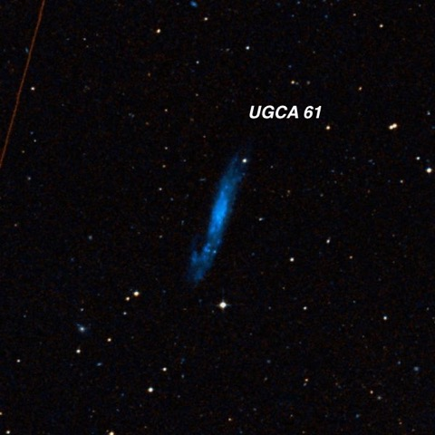
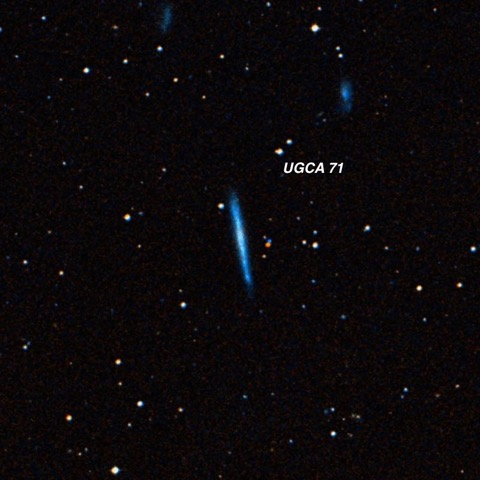
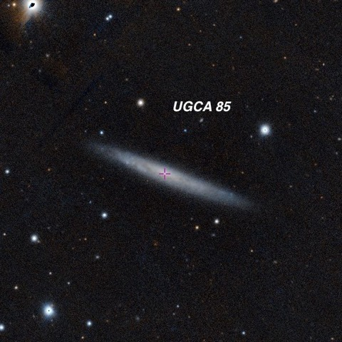
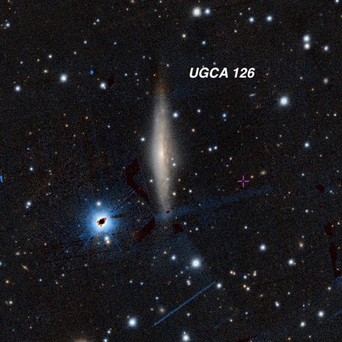

Starting Off The New Year Right!
It turned out the weather gods were in a good mood on New Years day! We had almost perfectly clear skies (some clouds were visible near the horizon to the south. Furthermore, there was no wind, not a hint of dew and the transparency and seeing were very good. I observed from roughly 6:30 to midnight and logged three dozen objects. C/46P Wirtanen, which peaked in brightness last month, was still very bright and barely visible naked-eye.
Before leaving home I made a list of targets from the UGCA catalogue — this is the Uppsala General Catalogue Addendum. The 1973 UGC only covered galaxies north of -02° declination. It was one of the primary galaxy catalogues that were based on the first Palomar Sky Survey. It included 12,921 galaxies at least 1’ in diameter, complete to roughly 15th magnitude. An addendum was published the following year adding 400+ galaxies mostly south of the equator. The addendum is a hodgepodge of bright southern NGCs, large low surface brightness dwarfs and compact northern galaxies. I decided to focus on thin edge-ons south of the equator. Thin celestial splinters are always an appealing and distinctive target! Observations were made through my 24-inch f/3.7 Starstructure.
Steve Gottlieb

Faint, fairly large, thin edge-on 7:1 ~E-W, ~1.4'x0.2', very low surface brightness, no noticeable core (late-type SBd spiral). Forms a pair (not physical) with brighter MCG -02-03-015 3.9' N. The apparent companion was also highly inclined — moderately bright and large, very elongated 3:1 SSW-NNE, small bright core.

Both UGCA 14 and UGC 17 were discovered by Swedish astronomer Erik Holmberg in his 1937 study on double and multiple galaxies. In the case of UGCA 17, he mistook a star for a companion, though. The galaxy hosted a type Ia supernova in 1998.
Visually I found this galaxy fairly faint, moderately large, very elongated 6:1 SSW-NNE, 1.2'x0.2'. A mag 12.8 star is just following the NNE end [57" from center]. A mag 16.1 star is just preceding the SSW side [41" from center]. Located 20' SE of mag 6.8 HD 8627 .

Extremely faint and thin — ghostly edge-on ~8:1 SW-NE, ~1.25'x0.15'. Very low but irregular surface brightness. A mag 15.8 star is just south of the southwest end [1.5' SSW of center]. This SDSS image highlights an asymmetric light distribution with blue patchy extensions (star forming regions) and an orange central region of older stars with no indication of a central bulge. The galaxy is a member of the Lyon Galaxy Group (LGG) 049, which includes NGC 833 , 835, 838 and 839 — also known as Hickson Compact Group (HCG) 16.

UGCA 24 = PGC 7900 02 04 31.4 -06 11 56; Cetus Type = SB(s)m B = 14.0; Size 3.2’x1.3'
Faint, moderately large, elongated 5:2 ~E-W, low surface brightness, very weak concentration, no distinct zones but increases in size with averted, ~1.25'x0.5'. A mag 13 star is at the east end and a mag 15.5 star is at the northeast edge. MCG -01-06-042 is 19' SE and MCG -01-06-041 is 20' SSE. UGCA 24 is a highly irregular barred spiral on the SDSS and has a very similar redshift as NGC 779 , which is located 1.2° WNW.

UGCA 36 = MCG -01-07-024 = PGC 9923 02 36 58.6 -05 20 57; Cetus Type = SAB(s)c pec Size 1.3'x1.0'; PA = 154°
UGCA 36 was surprisingly bright for galaxy that was missed by the 18th and 19th century observers. It was better than moderately faint, elongated 5:2 ~N-S, ~45"x18", small bright (round) core. A very faint, larger halo changed the ratio to 3:2, ~45"x30". A mag 15.1 star was barely off the north side. Located 52' W of NGC 1041 and 17' SSW of mag 8.5 HD 16378 . This galaxy has hosted two supernovae this century — type-II 2004er and type-Ib 2009ha and its redshift-independent distance is roughly 160 million l.y.

UGCA 61 = PGC 12011 03 13 40.4 -25 11 17; Fornax Type = SB(s)m V = 13.3; B = 13.8; Size 4.5'x0.9'; Surf Br = 14.7; PA = 163°
Faint, moderately large, elongated ~2:1 N-S or NNW-SSE, ~50"x25", very low surface brightness, probably mostly viewed the brighter central section (bar). Located 32' N of NGC 1255 in a group (LGG 086). This Sky Survey images shows a patchy bar, dusty patches and numerous knots.

UGCA 71 = FGC 424 = PGC 12798 03 25 24.9 -16 14 05; Eridanus Type = Sdm B = 15.3; Size 2.7'x0.3'; PA = 10°
Extremely faint, moderately large, thin edge-on N-S, slightly brighter core region, ~1.0'x0.15’. This ultra-thin galaxy required averted vision and concentration. An elongated group (N-S) of stars lies ~10' W. UGCA 71 is a member of the poor group LGG 092 with brightest member NGC 1309 located 1.1° NW.

UGCA 85 = PGC 13926 03 49 42.3 -26 59 36; Fornax V = 13.3; Size 3.4'x0.5'; Surf Br = 13.7; PA = 69°
This edge-on is located in the northeast corner of Fornax, just west of the Eridanus border. At 260x it appeared very faint, moderately large, thin edge-on, 1.5’x0.3’ SW-NE, low surface brightness, slightly brighter central region. Bounded by a triangle with a mag 13.1 star 2' WNW, a mag 12.4 star 3.5' SE and a mag 10.3 star 4.5' NE.

UGCA 126 = ESO 489-029 = MCG -05-15-008 = LGG 136-001 = PGC 18765 06 17 04.8 -27 23 19; Canis Major Type = Sbc V = 12.5; B = 13.4; Size 2.9'x0.4'; Surf Br = 12.5; PA = 1°
This dusty edge-on is a member of the poor group LGG 136 which includes NGC 2217 — a bright face-on barred spiral 1° ENE. It appeared moderately bright and large, very elongated 4:1 N-S, 1.0'x0.25', broad concentration with a small brighter core. Located 1.8' NW of blue mag 8.9 HD 43829 .